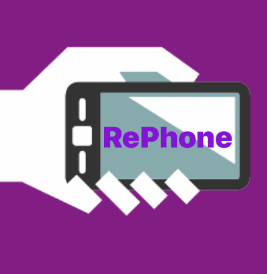

Termékválaszték
Kiváló Minőség
Személyre Szabott Tanácsadás
Gyors és Hatékony Szolgáltatás
A kínálatunkban megtalálhatók a legnépszerűbb és legújabb modellek a világ vezető mobiltelefon márkáitól, beleértve az Apple, a Samsung, a Huawei, a Xiaomi és még sok más neves gyártót. Vásárlóink számára garantáljuk, hogy mindig a legfrissebb és leginnovatívabb készülékeket kínáljuk, így biztosak lehetnek abban, hogy nálunk mindig a legjobbat kapják.
Szakértő csapatunk mindig rendelkezésre áll, hogy segítsen kiválasztani a számotokra legmegfelelőbb telefont. Legyen szó akár egy hosszú akkumulátor-élettartamról, egy professzionális kameráról, vagy egy gyors és hatékony processzorról, mi mindig megtaláljuk az igényeiteknek leginkább megfelelő készüléket.
Emellett üzletünkben kiegészítők és tartozékok széles választékát is megtaláljátok. Védőtokok, töltők, fülhallgatók, és minden olyan kiegészítő, amire szükségetek lehet a telefonotok kényelmes és biztonságos használatához.
Nálunk a vásárlók elégedettsége mindennél fontosabb. Ezért nemcsak a minőségi termékekre és a széles választékra helyezzük a hangsúlyt, hanem a kiváló ügyfélszolgálatra és a vásárlói élményre is. Kérdéseitekre szívesen válaszolunk, és minden tőlünk telhetőt megteszünk annak érdekében, hogy vásárlásotok gördülékeny és örömteli legyen.
Emellett kiegészítők, tokok, töltők és headsetek is elérhetők, hogy ügyfeleink teljes körű kényelmet élvezhessenek.
Üzletünk kiemelt figyelmet fordít arra, hogy kizárólag a legjobb minőségű készülékeket kínálja ügyfeleinek, hiszen hisszük, hogy egy kiváló minőségű telefon nemcsak egy eszköz, hanem egy életstílus kifejezője is.
A kiváló minőség számunkra nem csak egy ígéret, hanem egy elkötelezettség. Csapatunk szigorú minőségellenőrzési folyamatokon keresztül válogatja ki a készülékeket, hogy biztos lehessünk abban, minden telefon, amelyet üzletünkben kínálunk, megfelel a legmagasabb szabványoknak. Csak megbízható gyártóktól származó, eredeti és hitelesített termékeket forgalmazunk, hogy Önök maximális biztonságban érezhessék magukat vásárlás közben.
Üzletünkben mindig az aktuális trendeknek megfelelő, legújabb technológiával felszerelt telefonokat találnak. Számunkra fontos, hogy ügyfeleink mindig a legfrissebb és legfejlettebb készülékeket használhassák, amelyek nemcsak esztétikusak és ergonómikusak, hanem lenyűgöző teljesítménnyel és funkcionalitással is rendelkeznek.
A kiváló minőségű telefonok mellett üzletünkben kizárólag eredeti kiegészítőket és tartozékokat kínálunk. Ezek a kiegészítők nemcsak esztétikailag passzolnak a kiválasztott telefonhoz, hanem biztosítják annak teljes védelmét és hatékony használatát is. Töltők, védőtokok, kijelzővédő fóliák és bluetooth fülhallgatók – mindezek a termékek a legmagasabb minőségű anyagokból készülnek, hogy Önök hosszú éveken keresztül élvezhessék azokat.
Számunkra az elégedett vásárló a legnagyobb dicséret. Ezért folyamatosan arra törekszünk, hogy ügyfeleinknek ne csak egy telefonvásárlás élményt nyújtsunk, hanem egy hosszú távú kapcsolatot építsünk velük. Szakértő kollégáink mindig készséggel állnak rendelkezésükre, hogy segítsenek kiválasztani a számukra legmegfelelőbb telefont és kiegészítőket, valamint válaszoljanak minden kérdésükre és kérésükre.
A személyre szabott tanácsadás nálunk nem csak egy szlogen, hanem az üzleti filozófiánk alapja. Tudjuk, hogy minden vásárlónk más és más igényekkel érkezik hozzánk, ezért csapatunk mindent megtesz annak érdekében, hogy mindenki számára optimális megoldást találjon. Legyen szó akár hosszú akkumulátor-élettartamról, kiváló kameráról, vagy gyors adatfeldolgozásról, nálunk mindenki megtalálja az elvárásainak megfelelő telefont.
Szakértő kollégáink minden pillanatban rendelkezésükre állnak, hogy segítsenek kiválasztani a legmegfelelőbb telefont. Meghallgatják az Önök igényeit, életstílusát, és azt, hogy mire használnák a telefont a legtöbbet. Ezáltal személyre szabott tanácsokat adnak, hogy minden vásárlónk elégedetten távozhasson üzletünkből, tudván, hogy a legjobb döntést hozta meg.
A személyre szabott tanácsadás nemcsak a telefon kiválasztásakor fontos számunkra, hanem azután is. Kollégáink készséggel állnak rendelkezésükre, hogy segítsenek beállítani az új telefont, telepíteni az alkalmazásokat, vagy bármilyen egyéb kérdés esetén. Üzletünkben a vásárlás nem csak egy tranzakció, hanem egy hosszú távú kapcsolat kezdete, ahol mindig számíthatnak ránk.
Mint üzletünk hűséges vásárlói tudják, nálunk mindig a vásárló az első. Személyre szabott tanácsadással, kiváló minőségű telefonokkal és kiegészítőkkel, valamint kivételes ügyfélszolgálattal várjuk Önöket mindig.
A gyors és hatékony szolgáltatás az egyik sarokköve az üzletünk működésének. Kínálatunkban mindig megtalálhatók a legújabb és legnépszerűbb telefonok, így Önöknek nem kell sokáig keresgélniük az ideális készülék után. Szakértő kollégáink minden pillanatban rendelkezésükre állnak, hogy segítsenek kiválasztani a legmegfelelőbb telefont az igényeiknek megfelelően.
Az üzletünkben történő vásárlásnál a gyorsaság mellett a hatékonyság is kulcsfontosságú számunkra. Rugalmas és gyors fizetési lehetőségeket kínálunk, hogy Önök a vásárlás után azonnal élvezhessék az új telefon nyújtotta előnyöket. Minden szükséges információt pontosan és érthetően átadunk, hogy a vásárlóink magabiztosan dönthessenek.
Emellett gyors és hatékony kiszállítási szolgáltatást is biztosítunk, amennyiben Önök a kényelmüket választják és online rendelik meg a kívánt termékeket. Biztosítjuk Önöknek, hogy a megrendelt termékeik biztonságban és időben megérkeznek, hogy minél hamarabb élvezhessék az új telefon nyújtotta előnyöket.
Szolgáltatásunkat folyamatosan fejlesztjük annak érdekében, hogy Önök mindig a legjobbat kapják tőlünk. Üzletünkben a gyorsaság és a hatékonyság együtt jár a magas színvonalú kiszolgálással. Kollégáink mindig mosolygós arccal és segítőkészséggel várnak mindenkit, hiszen a vásárlóink elégedettsége a legnagyobb sikerünk.